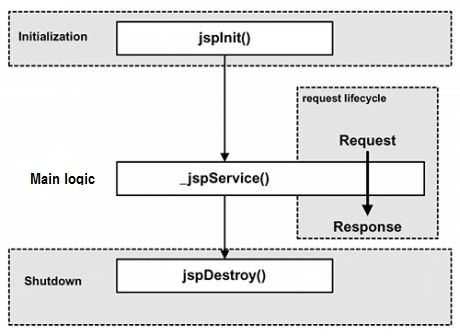
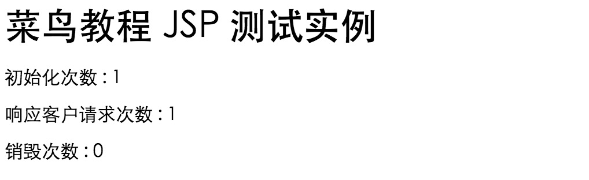

JSP ライフサイクル
JSPの基本的な機能を理解する鍵は、それらが従うライフサイクルを理解することです。
JSPライフサイクルは、作成から破棄までの全プロセスであり、servletライフサイクルに似ています。違いは、JSPライフサイクルにはJSPファイルをservletにコンパイルすることも含まれる点です。
以下は、JSPライフサイクルで経るいくつかの段階です。
- コンパイル段階：
servletコンテナはservletソースファイルをコンパイルし、servletクラスを生成します。
- 初期化段階：
JSPに対応するservletクラスをロードし、そのインスタンスを作成し、初期化メソッドを呼び出します。
- 実行段階：
JSPに対応するservletインスタンスのサービスメソッドを呼び出します。
- 破棄段階：
JSPに対応するservletインスタンスの破棄メソッドを呼び出し、その後servletインスタンスを破棄します。
明らかに、JSPライフサイクルの4つの主要な段階はservletライフサイクルと非常に似ています。以下に図を示します。

JSPコンパイル
ブラウザがJSPページをリクエストすると、JSPエンジンはまずこのファイルをコンパイルする必要があるかどうかをチェックします。このファイルがコンパイルされていないか、前回のコンパイル後に変更された場合は、このJSPファイルをコンパイルします。
コンパイルのプロセスは3つのステップを含みます：
- JSPファイルを解析します。
- JSPファイルをservletに変換します。
- servletをコンパイルします。
JSPの初期化
コンテナがJSPファイルをロードした後、リクエストにサービスを提供する前にjspInit()メソッドを呼び出します。カスタムのJSP初期化タスクを実行する必要がある場合は、次のようにjspInit()メソッドをオーバーライドするだけです：
public void jspInit(){
// 初始化代码
}
一般的に、プログラムは一度だけ初期化され、servletも同様です。通常、jspInit()メソッドでデータベース接続の初期化、ファイルのオープン、クエリテーブルの作成を行うことができます。
JSP実行
この段階では、JSPライフサイクルにおいて、破棄されるまでのリクエストに関連するすべての対話動作を説明します。
JSPページの初期化が完了すると、JSPエンジンは_jspService()メソッドを呼び出します。
_jspService()メソッドは、引数としてHttpServletRequestオブジェクトとHttpServletResponseオブジェクトを必要とします。次のようになります：
void _jspService(HttpServletRequest request,
HttpServletResponse response)
{
// 服务端处理代码
}
_jspService()メソッドは各リクエストで1回呼び出され、対応するレスポンスを生成する役割を担います。また、GET、POST、DELETEなど、7つのHTTPメソッドすべての応答を生成する役割も担います。
JSPクリーンアップ
JSPライフサイクルの破棄段階では、JSPページがコンテナから削除されるときに起こるすべてを説明します。
jspDestroy()メソッドは、JSPにおけるservletの破棄メソッドに相当します。データベース接続の解放やフォルダのクローズなどのクリーンアップ作業を実行する必要がある場合は、jspDestroy()メソッドをオーバーライドします。
jspDestroy()メソッドの形式は次のとおりです：
public void jspDestroy()
{
// 清理代码
}
例
JSPライフサイクルのコード例を次に示します：
<%@ page language="java" contentType="text/html; charset=UTF-8"
pageEncoding="UTF-8"%>
<html>
<head>
<title>life.jsp</title>
</head>
<body>
<%!
private int initVar=0;
private int serviceVar=0;
private int destroyVar=0;
%>
<%!
public void jspInit(){
initVar++;
System.out.println("jspInit(): JSP被初始化了"+initVar+"次");
}
public void jspDestroy(){
destroyVar++;
System.out.println("jspDestroy(): JSP被销毁了"+destroyVar+"次");
}
%>
<%
serviceVar++;
System.out.println("_jspService(): JSP共响应了"+serviceVar+"次请求");
String content1="初始化次数 : "+initVar;
String content2="响应客户请求次数 : "+serviceVar;
String content3="销毁次数 : "+destroyVar;
%>
<h1>菜鸟教程 JSP 测试实例</h1>
<p><%=content1 %></p>
<p><%=content2 %></p>
<p><%=content3 %></p>
</body>
</html>
ブラウザでそのページを開くと、出力結果は次のようになります：

その他の拡張